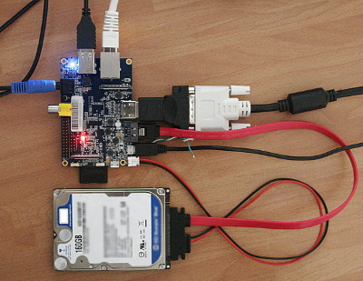
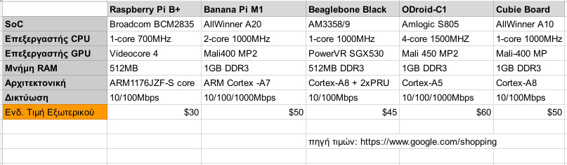
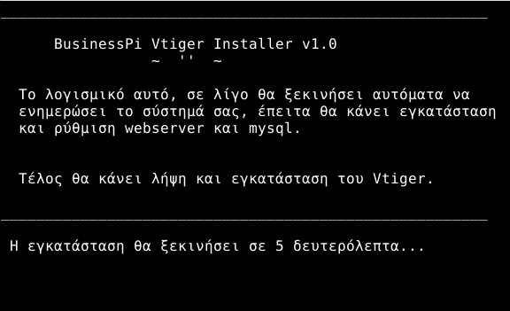
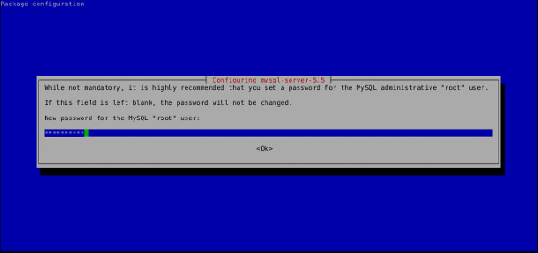
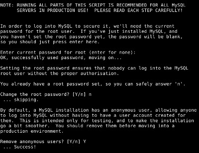

Στο προηγούμενο άρθρο κάναμε μια εισαγωγή στο τι είναι το BusinessPi και είδαμε τεχνικές λεπτομέρειες σχετικά με το Hardware του. Μπορείτε να τα διαβάσετε στις παρακάτω αναρτήσεις:
- Τι είναι το BusinessPi
- Hardware δοκιμών
- Λειτουργικό Σύστημα, Υπηρεσίες παρασκηνίου και Λογισμικό
- Διαθέσιμη η έκδοση 15.04-1 του BussinessPi για λήψη
- Σύνδεση BananaPi και εγκατάσταση του BusinessPi
Δημιουργία εταιρικού διακομιστή σε Pi board
Η ενότητα αυτή περιλαμβάνει όλα όσα χρειάζεται να γνωρίζει ο αναγνώστης σχετικά με την "κλωνοποίηση" του έργου BusinessPi.
Απευθύνεται με λίγα λόγια σε όσους επιθυμούν να αγοράσουν τον ίδιο ή παρεμφερή εξοπλισμό, να εγκαταστήσουν συμβατή διανομή και να εγκαταστήσουν το λογισμικό που περιλαμβάνεται στο BusinessPi με στόχο την δημιουργία χαμηλού κόστους εταιρικού διακομιστή για την νεοφυή εταιρεία τους.
Εισαγωγή
Παρότι η αρχιτεκτονική των Single-board computer υπολογιστικών συστημάτων είναι αρκετά παλιά, εντούτοις άρχισε να γίνεται εκτεταμένη η χρήση τους τα τελευταία 5 χρόνια σε εκπαιδευτικούς οργανισμούς, ερευνητικά κέντρα αλλά και επιχειρήσεις.
Ο λόγος ήταν η ευρεία αποδοχή του RaspberyPi ("ο υπολογιστής των 25$") από την κοινότητα ΕΛ/ΛΑΚ αλλά και η παράλληλες εξελίξεις της αρχιτεκτονικής των ARM επεξεργαστών στα smartphone. Στα τελευταία, η τεχνολογική ανάπτυξη στον τομέα των SoC οδήγησε στην παράλληλη αύξηση των επιδόσεων και την μείωση του κόστους του τελικού προϊόντος.
Έτσι σήμερα έχουμε μια ευρεία γκάμα από χαμηλού κόστους, σε σχέση με τους παραδοσιακούς υπολογιστές PC, και αρκετά υψηλών επιδόσεων Single-board computers τα οποία μπορεί ο αναγνώστης να μελετήσει, να συγκρίνει και να επιλέξει αυτό που θα καλύψει τις ανάγκες της δικής του επιχείρισης.
Είναι σίγουρο ότι στο προσεχές διάστημα οι εξελίξεις αλλά και νέες εκδόσεις των Single-board computers θα παρέχουν μεγαλύτερες επιδόσεις σε χαμηλό κόστος και θα γίνει ακόμα πιο διαδεδομένη η χρήση τους σε επιχειρηματικό περιβάλλον μιας και ιδιαίτερα για τις νεοφυής επιχειρήσεις το διαθέσιμο κεφάλαιο εκκίνησης είναι χαμηλό.
Υλικό
Το υλικό που απαιτείται για να δημιουργήσετε έναν μικρό εταιρικό διακομιστή βασισμένο σε Single-board computer (ή Pi Board για συντομία) αποτελείται από:
- Board
- Παρελκόμενα
Board
Στην παγκόσμια αγορά κυκλοφορούν Pi Boards που διαφέρουν κυρίως στις επιδόσεις του επεξεργαστή και της μνήμης. Παρότι σήμερα ήδη έχουμε Pi Boards με τετραπύρηνους επεξεργαστές και 1 GB μνήμης RAM, απο τις εξελίξεις στον τομέα των SoC διαφαίνεται ότι θα υπάρχουν περισσότερες εναλλακτικές διαθέσιμες. Ένας εκτενείς συγκριτικός πίνακας βρίσκεται στην σελίδα : https://en.wikipedia.org/wiki/Comparison_of_single-board_computers
Για τους σκοπούς του έργου BusinessPi, αφού αποκλείσαμε κάποια μοντέλα (λόγοι κόστους/διαθεσιμότητας/επιδόσεων) επιλέξαμε και συγκρίναμε τα board που εμφανίζονται στον παρακάτω πίνακα. Προτείνουμε στον αναγνώστη να επιλέξει αυτό που θα καλύψει τις δικές του ανάγκες (Σημείωση η τιμή κόστους είναι ενδεικτική)

Παρελκόμενα
Συνήθως η αγορά του Board δεν περιλαμβάνει κάποιες βασικές επεκτάσεις τις οποίες θα πρέπει να τις αοράσουμε ξεχωριστά:
Απαραίτητα είναι: - Καλώδιο δικτύου - Κάρτα SD - Τροφοδοσία ρεύματος
Προαιρετικά ανάλογα με τα χαρακτηριστικά του μοντέλου: - Καλώδιο HDMI/VGA για σύνδεση σε οθόνη - Καλώδιο SATA για σύνδεση με δίσκο SATA - Καλώδιο εξόδου για ηχεία - USB Hub για σύνδεση πληκτρολογίου/ποντικιού
Για όλα τα παραπάνω είναι απαραίτητη η προσεκτική ανάγνωση των προδιαγραφών που θέτει ο κατασκευαστής (ιδιαίτερα για την παροχή ρεύματος) ώστε το borad μας να λειτουργεί αξιόπιστα και αδιάλειπτα.
Λειτουργικό Σύστημα
Το λειτουργικό σύστημα που υποστηρίζουν τα διαθέσιμα board της αγοράς, είναι στην πλειοψηφία τους βασισμένα στο Linux. Συγκεκριμένα, αποτελούν εξειδικευμένη και τροποποιημένη έκδοση κάποιας από τις γνωστότερες διανομές Linux που προορίζονται για τους κοινούς υπολογιστές.
Λόγο της αρχιτεκτονικής των board (ARM επεξεργαστές) δεν μπορούμε να εγκαταστήσουμε διανομή Desktop χωρίς προσαρμογές και μεταγλώττιση του πηγαίου κώδικα για την αρχιτεκτονική του board μας. Παρόλα αυτά οι κατασκευαστές των board αλλά και οι κοινότητα ΕΛ/ΛΛΑΚ έχουν μεταφέρει αρκετές διανομές και μπορούμε να τις εγκαταστήσουμε από την σελίδα του κατασκευαστή ή από την αντίστοιχη κοινότητα του board.
Οι δύο πιο διαδεδομένες διανομές που θα βρούμε εκδόσεις τους διαθέσιμες για όλα σχεδόν τα board είναι αυτές που βασίζονται στο Ubuntu και το Debian.
Αν παρόλα αυτά ο αναγνώστης επιθυμεί να εγκαταστήσει κάποια άλλη διανομή Linux στον εταιρικό του διακομιστή βασισμένο σε Pi board, θα θέλαμε να επιστήσουμε την προσοχή του στο να διαλέξει κάποια που έχει και εταιρική παρουσία ετών στον χώρο των διακομιστών.
Έτσι οι διανομές βασισμένες σε Debian, Ubuntu, CentOS είναι αξιόπιστες για χρήση σε εταιρικό περιβάλλον, μιας και διαθέτουν εταιρική παρουσία σε τομείς όπως Servers, Workstations, Cloud Infrastracture και Workstations. Με αυτό τον τρόπο αποκλείονται προβλήματα συμβατότητας με εταιρικά λογισμικά, κρίσιμα προβλήματα λογισμικού και κενά ασφαλείας, μιας και οι διανομές αυτές λόγο και της εταιρικής παρουσίας τους εκδίδουν σύντομα και συχνά διορθώσεις λογισμικού και κενών ασφαλείας.
Ενδεικτικά, για τους σκοπούς του έργου, το BusinessPi είναι βασισμένο σε μια ειδική διανομή (Bananian) βασισμένη στο Debian. (βλέπε Λειτουργικό σύστημα)
Για την εγκατάσταση του λειτουργικού συστήματος θα χρειαστεί να κάνετε λήψη συνήθως μιας προρυθμισμένης εικόνας δίσκου (Image disk) που είναι προσαρμοσμένη για το board σας. Έπειτα μπορείτε να το κάντε εγκατάσταση στο board σας όπως περιγράφεται στον οδηγό Εγκατάσταση Λειτουργικού.
Υπηρεσίες
Η επόμενη κρίσιμη απόφαση που πρέπει να λάβει ο αναγνώστης είναι τον ρόλο που θα αναθέσει στον εταιρικό διακομιστή. Ο διακομιστής θα παρέχει στο εταιρικό δίκτυο, ειδικού σκοπού υπηρεσίες, που περιλαμβάνουν συνήθως μια ή παραπάνω από τις παρακάτω εργασίες:
- Διαχείριση Εταιρικών mail
- Διαμοιρασμός Αρχείων με κοινόχρηστους φακέλους
- Εκτέλεση εταιρικών λογισμικών (ήτοι CRM)
Ιδιαίτερη προσοχή πρέπει να δοθεί στην περίπτωσή των Pi board το γεγονός ότι ανάλογα με τον αριθμό χρηστών που θα χρησιμοποιούν τις υπηρεσίες του διακομιστή αυξάνονται και οι απαιτήσεις σε επιδόσεις. Οπότε θα πρέπει αν γίνει προσεκτική μελέτη και προγραμματισμός για το ποιες υπηρεσίες θα παρέχονται μέσω του Pi Board και πως (χρήση εξωτερικού δίσκου SATA, χρήση NAS κλπ.).
Ενδεικτικά, για τους σκοπούς του έργου, το BusinessPi παρέχει υπηρεσίες Web Server (Apache) με βάση δεδομένων (MySQL) και SSH server για να μπορέσετε να συνδέεστε από τον υπολογιστή σας απομακρυσμένα. (βλέπε Λειτουργικό σύστημα)
Πριν προχωρήστε παρακαλούμε μελετήστε τον οδηγό (βλέπε Εγκατάσταση) μιας και πολλά σημεία του για λόγους αποφυγής επανάληψης δεν θα αναφερθούν εδώ.
Λογισμικό
Ανάλογα με την υπηρεσία που θα διεκπεραιώνει ο διακομιστής θα πρέπει να εγκατασταθούν οι απαραίτητες βιβλιοθήκες του συστήματος αλλά και τα λογισμικά για την υποστήριξη, καταγραφή και παρακολούθηση του λειτουργικού συστήματος.
Ενδεικτικά, για τους σκοπούς του έργου, το BusinessPi είναι ρυθμισμένο να παρέχει το εταιρικό λογισμικό Vtiger CRM. (βλέπε Λειτουργικό σύστημα)
Η εγκατάσταση του λογισμικού αυτού μπορεί να γίνει με δυο τρόπους:
- Αυτοματοποιημένα
- Χειροκίνητα
Αυτόματη εγκατάσταση
Για την εγκατάσταση των λογισμικών που παρέχονται όπως και στο BusinessPi αναπτύχθηκε ένα λογισμικό αυτόματης εγκατάστασης.
Το λογισμικό αυτό είναι συμβατό με διανομές που βασίζονται στο Debian ή το Ubuntu.
Για την χρήση του θα χρειαστεί να έχετε εγκατεστημένα δυο λογισμικά στο σύστημά σας:
- Wget (π.χ. sudo apt-get install wget)
- Unzip (π.χ. sudo apt-get install unzip)
Επομένως συνδεθείτε στο board σας :
ssh user@ip-οf-board
Όπου user είναι το προεπιλεγμένο όνομα του χρήστη της διανομής που επιλέξατε και κάνατε εγκατάσταση και το ip-οf-board είναι η IP του board σας όπως διαβάσατε στον οδηγό Εύρεση IP
Έπειτα θα πρέπει να κάντε λήψη του λογισμικού αυτόματης εγκατάστασης:
wget https://github.com/BusinessPi/vtiger-installer/archive/master.zip
Εξάγετε το περιεχόμενο του αρχείου zip:
unzip master.zip
Εισέλθετε στον φάκελο vtiger-installer-master
cd vtiger-installer-master
Εκτελέστε τον αυτόματο εγκαταστάτη
sudo ./businesspi-vtiger-installer.sh
Μόλις ξεκινήσει θα δείτε την παρακάνω εικόνα

Μετά απο 5 δευτερόλεπτα θα ξεκινήσει ενημέρωση του συστήματος, ρύθμιση παραμέτρων διευθυνσιοδότησης και εγκατάστασης υπηρεσιών Web Server και MySQL
Κατά την εγκατάσταση της MySQL θα χρειαστεί να θέσετε ένα ασφαλές συνθηματικό για τον χρήστη root της MySQL (Προσοχή δεν είναι ο χρήστης root του συστήματος)

Έπειτα θα σας ζητηθεί να βάλετε το συνθηματικό root που θέσατε για την MySQL ώστε να εκτελεστεί ο οδηγός ασφάλειας MySQL. Στην ερώτηση αλλαγής συνθηματικού root απαντήστε αρνητικά ενώ στα υπόλοιπα καταφατικά

Στη συνέχεια θα γίνει αυτόματα η λήψη, αποσυμπίεση και ρύθμιση παραμέτρων εγκατάστασης του Vtiger CRM. Μόλις ολοκληρωθούν τα βήματα του λογισμικού αυτόματης εγκατάστασης θα δείτε το μήνυμα :
Τώρα θα πρέπει να ρυθμίσετε τον υπολογιστή σας στο host αρχείο του να μεταφράζει το http://vtiger.businesspi.local στην IP που έχει λάβει (ή θέσατε εσείς) για να να συνδεθείτε στο Vtiger
Επομένως τώρα μπορείτε με βάση τις οδηγίες Ρυθμιση Στατικής IP και Domain να συνδεθείτε στο Vtiger CRM του board σας.
Αφού συνδεθείτε από τον browser του υπολογιστή σας στο http://vtiger.businesspi.local ακολουθήστε τις οδηγίες Ρύθμισης του vtiger που είδαμε στο προϊγούμενο άρθρο.
Χειροκίνητη εγκατάσταση
Αφού συνδεθείτε στο board σας ενημερώστε το σύστημά σας:
sudo apt-get update && sudo apt-get -y upgrade
Αλλάξτε το Hostname του συστήματος σε vtiger
sudo cp /etc/hostname /etc/hostname.origin
sudo echo 'vtiger' > /etc/hostname
και το domain σε vtiger.businesspi.local ώστε το board σας να διαθέτει FQDN
sudo nano /etc/hosts
127.0.0.1 localhost.localdomain localhost
127.0.1.1 vtiger.businesspi.local vtiger
::1 localhost ip6-localhost ip6-loopback
fe00::0 ip6-localnet
ff00::0 ip6-mcastprefix
ff02::1 ip6-allnodes
ff02::2 ip6-allrouters
Ενεργοποιείστε τις νέες ρυθμίσεις
invoke-rc.d hostname.sh start
Ελέγξτε οτι είναι σωστές με την παρακάτω εντολή να επιστέφει vtiger.businesspi.local
hostname -f
Εγκαταστήστε τις υπηρεσίες Apache, MySQL και τις απαραίτητες για το Vtiger βιβλιοθήκες:
sudo apt-get -y install apache2 libapache2-mod-php5 mysql-server php5-mysql php5-imap php5-xmlrpc php5-gd php5-curl apache2-utils libgd-tools
Εκτελέστε τον οδηγό ασφάλειας MySQL και απαντήστε στις ερωτήσεις
sudo mysql_secure_installation
Κάντε λήψη το Vtiger CRM 6.3.0
wget http://sourceforge.net/projects/vtigercrm/files/vtiger%20CRM%206.3.0/Core%20Product/vtigercrm6.3.0.tar.gz
Καντε εξαγωγή του αρχείου, μεταφορά στον φάκελο του webserver και ρυθμίστε τα δικαιώματα χρήσης και εκτέλεσής του από τον Web Server
tar -xvzf vtigercrm6.3.0.tar.gz
rm /var/www/index.html
mv vtigercrm /var/www/vtigercrm
chmod -R 775 /var/www/vtigercrm
chown -R www-data:www-data /var/www/vtigercrm
Ρυθμίστε την PHP με βάση τις προδιαγραφές που απαιτούνται απο το Vtiger CRM βλέπε Vtiger PHP Configuration
sudo cp /etc/php5/apache2/php.ini /etc/php5/apache2/php.ini.origin
sudo nano /etc/php5/apache2/php.ini
Δημιουργήστε και ρυθμίστε το vhost αρχείο vtigercrmapache για Vtiger
sudo nano /etc/apache2/sites-available/vtigercrmapache
<VirtualHost *:80>
ServerName vtiger.businesspi.local
DocumentRoot /var/www/vtigercrm
<Directory /var/www/vtigercrm>
Options FollowSymLinks
AllowOverride None
</Directory>
# Possible vaues include: debug, info, notice, warn, error, crit,
# alert, emerg.
LogLevel warn
ErrorLog /var/log/apache2/vtigercrm-error.log
CustomLog /var/log/apache2/vtigercrm-access.log combined
ServerSignature Off
</VirtualHost>
Αφού αποθηκεύσετε και κλείσετε το αρχείο, ενεργοποιείστε το νέο vhost και απενεργοποιήστε τον προεπιλεγμένο του apache
sudo a2ensite vtigercrmapache
sudo a2dissite 000-default
Κάντε επανεκκίνηση των υπηρεσιών Apache και MySQL
sudo service apache2 restart
sudo service mysql restart
Επομένως τώρα μπορείτε με βάση τις οδηγίες Ρυθμιση Στατικής IP και Domain να συνδεθείτε στο Vtiger CRM του board σας.
Αφού συνδεθείτε από τον browser του υπολογιστή σας στο http://vtiger.businesspi.local ακολουθήστε τις οδηγίες Ρύθμισης του vtiger που είδαμε στο προϊγούμενο άρθρο.
Επίλογος
Η αγορά του Pi Board και του περιφερικού εξοπλισμού, για εταιρικές ανάγκες, δεν πρέπει να ξεπερνά τα 100 ευρώ. Ο δε χρόνος εγκατάστασης του λειτουργικού, η ρύθμιση των υπηρεσιών και των λογισμικών, με τις οδηγίες που περιλαμβάνονται σε αυτό το wiki και ανάλογα με την τεχνογνωσία του αντικειμένου αλλά και την προσωπική του εμπειρία του αναγνώστη δεν θα χρειαστεί να είναι παραπάνω από περίπου 1-2 ώρες.